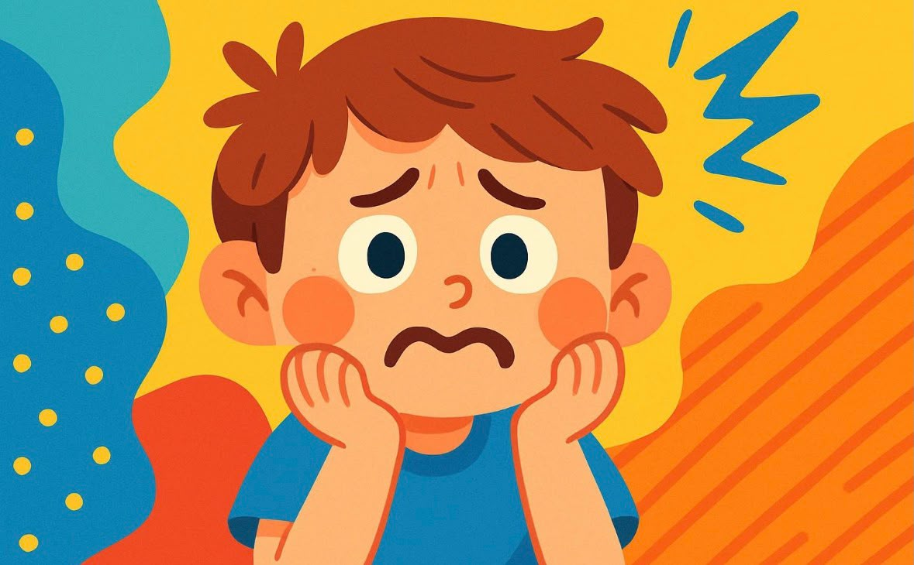
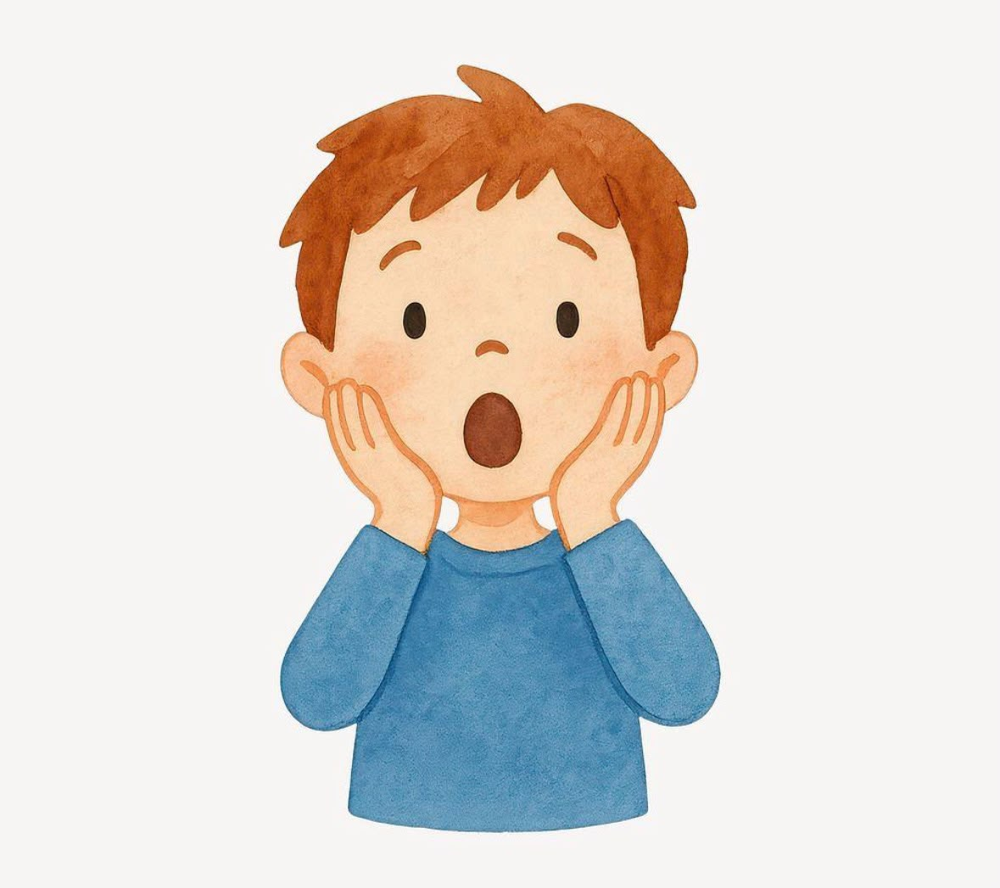
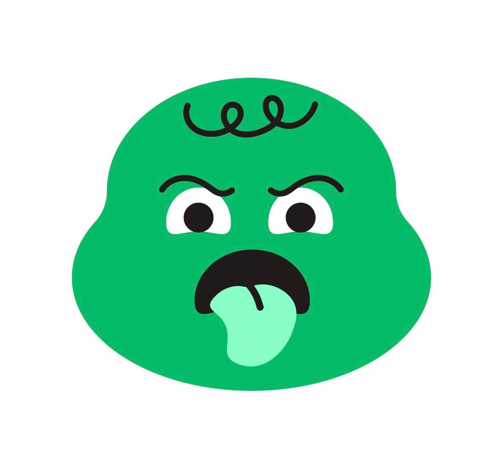

Herramientas para trabajar con tus alumnos 💗
Esta sección es una guía para ti, maestro, no es tarea para el alumno. Sirve para que sepas cómo hablar del tema, qué objetivo tiene y cómo ayudar a tus alumnos a identificar y manejar lo que sienten.
Las emociones son reacciones naturales que tenemos todos ante lo que nos pasa. No son buenas ni malas, todas sirven para algo. El problema no es sentirlas, es no saber qué hacer con ellas.
Que los alumnos aprendan a reconocer, nombrar y expresar sus emociones de forma sana, sin reprimirlas ni agredir a otros.
| Emoción | Descripción | Ilustración |
|---|---|---|
| Alegría | Cuando nos pasa algo bonito, nos sentimos bien y con energía. |
|
| Tristeza | Cuando perdemos algo o alguien nos lastima, nos dan ganas de llorar y aislarnos. |
|
| Enojo | Cuando sentimos injusticia o nos provocan, nos dan ganas de defendernos. |
|
| Miedo | Cuando sentimos peligro, el cuerpo se prepara para huir o protegerse. |
 |
| Sorpresa | Cuando pasa algo inesperado. |
 |
| Asco | Cuando algo nos desagrada o nos da rechazo. |
 |
❝Sentir enojo, tristeza o miedo es normal. Lo que tenemos que aprender es a controlarlo, no a esconderlo.❞